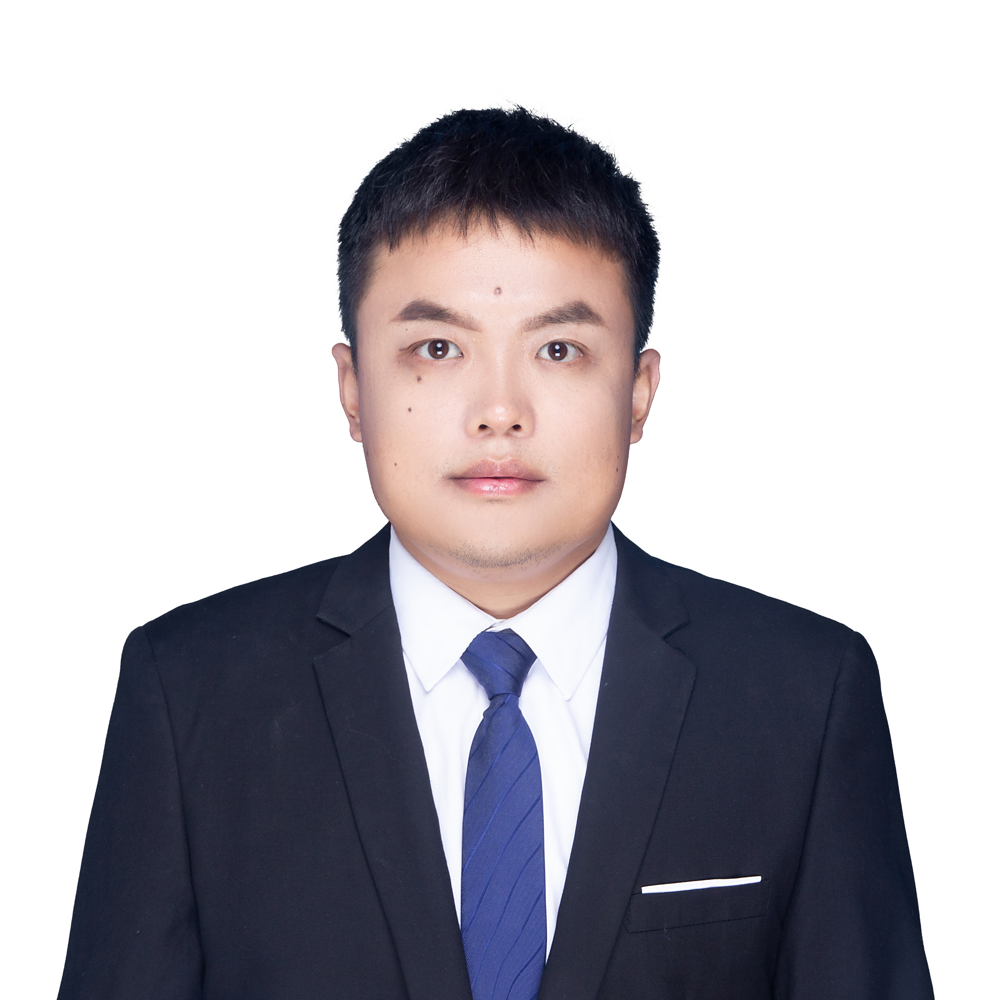

 |
Jian Liu (刘健)[jliu83@zjut.edu.cn]Assistant Professor in the College of Computer Science and Technology at Zhejiang University of Technology. He received his Ph.D. degree from Louisiana State University, Baton Rouge, LA, USA in 2021. His research interests include big data, storage/caching, time-series, data deduplication, AI, etc. |